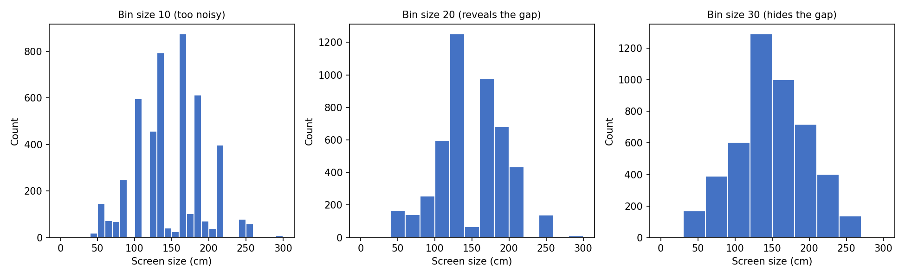
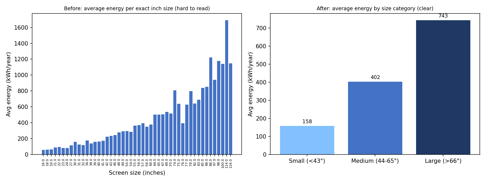

Storyboard: Telling the TV Energy Story
How two data questions were planned, from first noticing an issue to a final recommendation.
Before the Televisions page was written, each data question was worked through as a six-step story: naming the issue, showing it in a first chart, weighing ideas for digging deeper, carrying out that investigation, comparing the chart before and after refining it, and arriving at a recommendation. Both storyboards are shown below.
Do we know what TV sizes are common, and can the data be trusted?
A histogram (bin 20) of 4,724 TVs shows a dip at 140-160cm, only 66 models.
Try bin sizes 10 and 30, and check the dip against real model numbers.
A 65 inch model converts to 165.1cm, confirming labels are correct, not misclassified.
Bin 10 looked noisy, bin 30 hid the gap, bin 20 revealed it clearly.
The 55-63 inch range is a real market gap, not a data error.

Shoppers rarely realise how much a bigger TV costs to run each year.
A scatter plot of size vs energy shows a rising trend, but sizes are listed in cm.
Convert cm to inches, then group TVs into small, medium and large.
Under 43 inch is small, 44-65 inch is medium, over 66 inch is large.
A busy scatter plot in inches became one clear bar per size group.
Energy use jumps from 158 to 402 to 743 kWh a year, small to large.
